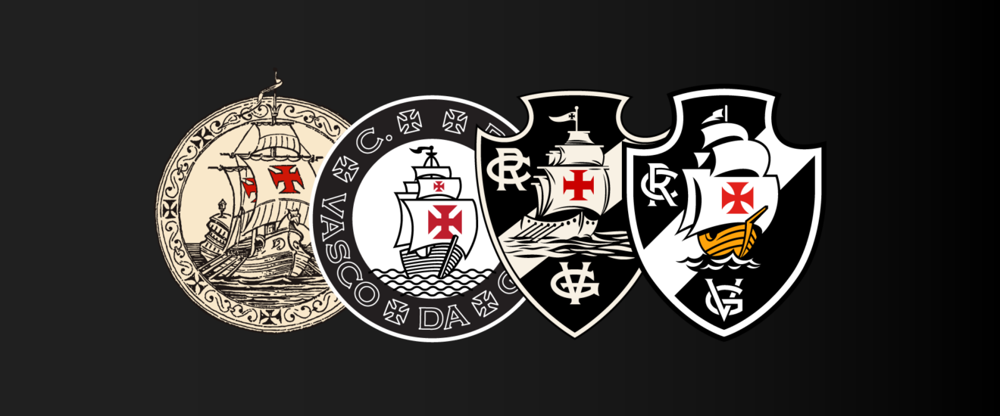
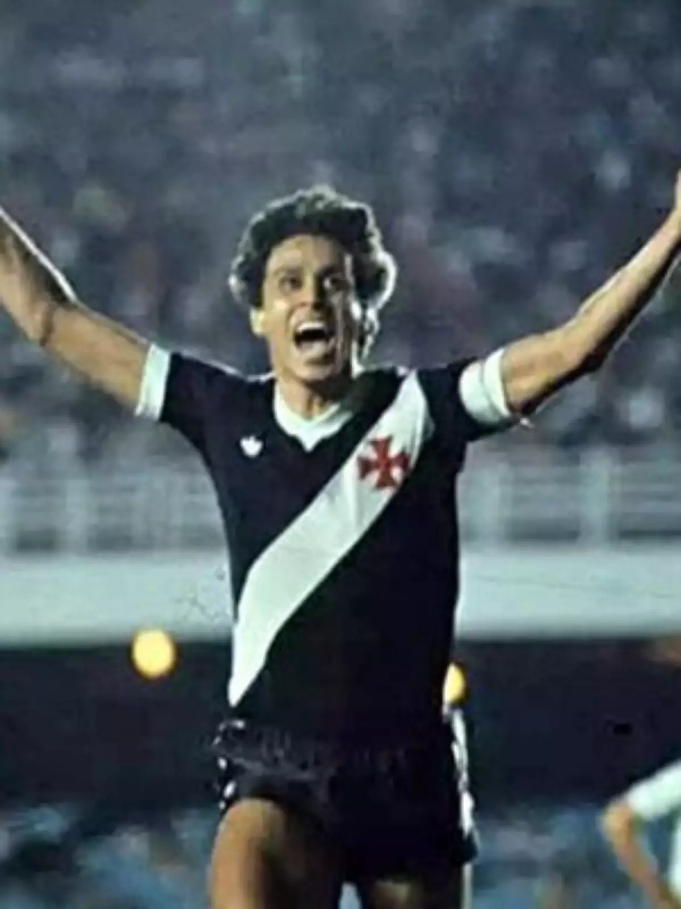

A história do Vasco da Gama é, acima de tudo, uma crônica de coragem e justiça social no esporte brasileiro. Fundado em 1898 como um clube de regatas, o Vasco chocou a elite do futebol carioca na década de 1920 ao ser o primeiro grande clube a abrir as portas para jogadores negros, pardos e operários, formando os lendários "Camisas Negras". Quando os rivais tentaram banir o clube da liga exigindo que dispensasse seus atletas humildes, o Vasco respondeu com a histórica Resposta Histórica de 1924, recusando-se a discriminar seus heróis, e construiu com o suor de sua própria torcida o estádio de São Januário — na época o maior da América do Sul — para provar que o povo tinha o seu lugar de direito no topo do futebol.
No ano do seu centenário, o Vasco da Gama imortalizou-se como "O Gigante da Colina" ao conquistar a Libertadores de 1998 com uma campanha irretocável e repleta de simbolismo. Sob o comando de Antônio Lopes, o elenco liderado por ídolos como Mauro Galvão, Carlos Germano e a dupla letal Donizete e Luizão, superou gigantes brasileiros como Cruzeiro e Grêmio, além de protagonizar o histórico gol de falta de Juninho Pernambucano contra o River Plate no Monumental de Nuñez. A glória máxima foi selada no dia 26 de agosto de 1998, em Guayaquil, com uma vitória por 2 a 1 sobre o Barcelona do Equador, garantindo que o clube cruz-maltino celebrasse seus cem anos de fundação no topo do continente sul-americano.

708 gols (recorde histórico)
| Título | Data | Quantidade |
|---|---|---|
| Libertadores | 1998 | 1🏆 |
| Campeonato Brasileiro | 1974, 1989, 1997, 2000 | 4🏆 |
| Copa do Brasil | 2011 | 1🏆 | Campeonato Carioca | 23, 24, 29, 34, 36, 45, 47, 49, 50, 52, 56, 58, 70, 77, 82, 87, 88, 92, 93, 94, 98, 03, 15, 16 | 24🏆 |